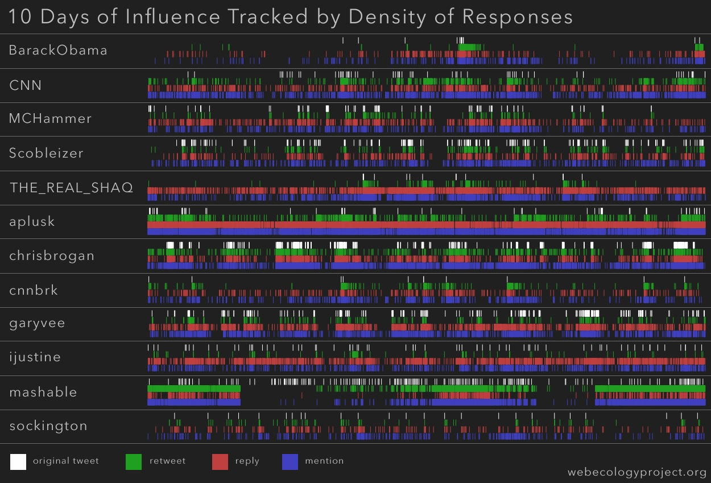
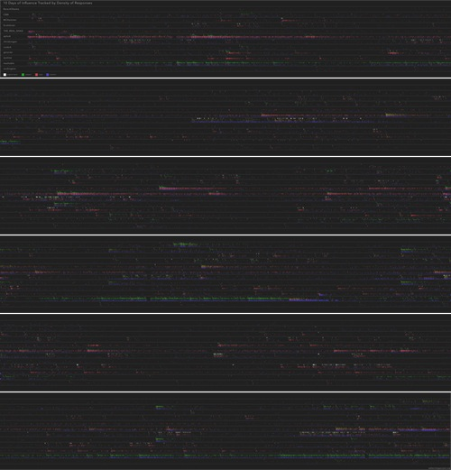

The Influentials
Using a new methodology based on the content and responses of 12 popular users, we determined measurements of relative influence on Twitter. We examined an ecosystem of 134,654 tweets, 15,866,629 followers, and 899,773 followees, and in response to the 2,143 tweets generated by these 12 users over a 10-day period, we collected 90,130 responses published by other users.
Summary of Findings
An analysis of our methodology and statistics suggests that on Twitter, among various configurable conclusions:
- mashable is more influential than CNN.
- sockington is more influential than MCHammer, while MCHammer is more influential than three major social media analysts (garyvee, Scobleizer, and chrisbrogan).
- Celebrities with higher follower totals (eg., THE_REAL_SHAQ and ijustine) foster more conversation than provide retweetable content.
- News outlets, regardless of follower count, influence large amounts of followers to republish their content to other users.

Click to expand image. A larger version with more temporal depth is linked at the bottom of this report.
{kind=link}
We would also like to thank Jon Beilin, Mac Cowell, and Tim Hwang for their invaluable contributions, feedback, and support.
The Influentials (pdf)
10 Days of Influence Tracked by Density of Responses (2993.27 KB jpg)
{kind=link}
The Folly of Following Followers: Judging Influence on Twitter
As a simple online platform for conversation, Twitter is an ideal an ecological system through which we can understand the relationship between users and their environments on the Web. Especially compared to other social networks, Twitter simplifies most of the extraneous features and boils down its environment to people and content. The unusual simplicity of Twitter, though, continues to warp perception of how the relationship between user and platform operates. Many of the popularized studies examining influence on Twitter fail to identify the nuances of social interaction in the system. While attempts have been made (eg., http://twinfluence.com/about.php), the analyses tend to focus on the connections between users rather than the relationship of users, content, and platform. This report therefore aims to supplement previous investigations of the Twitter environment with more comprehensive data sets to enhance new approaches to understanding the concept of “influence” on social networks.
A focus solely on the connections between users skews an understanding of how influence operates and flows on Twitter. A popular metric of perceived influence on Twitter measures the quantity of a user’s followers. In general, the more followers a user possess, the more impact he appears to make in the Twitter environment, because he seems more popular (namely, that users follow him). This statement makes sense assuming that Twitter acts as a successful broadcast medium, where a user publishes a tweet and it is read by every follower. However, this view of Twitter as a broadcast medium ignores the potential for users to interact with the content on the platform.
A similar and equally popular metric to measure influence on Twitter relies on the ratio between the number of a user’s followers and the number of other people that the user follows (his audience, or as we designate in this report, followees). This ratio, while better than the former method of counting followers, is still imprecise. Again, a ratio based on audience ignores the ability for a user to interact with content on the platform. However, the ratio of followers to followees does inform a better understanding of how influence can operate in Twitter’s environment.
The ratio of followers to followees may communicate the intended purpose or emergent practices of a user. For example, if the ratio approaches infinity (high follower total versus low followee total), the user account might be described as focusing on the material aspect of Twitter. By material, we mean a compulsion toward moving content to other users in the environment. In another instance, if the ratio approaches 1 (an equal or near-equal amount of followers and followees), the user might be categorized as a conversationalist. The user most likely follows back a majority of his followers, to retain familiarity with more personal conversations. Contrarily, the materialistic user aims to collect followers as contacts to whom the user may push content (who may then share the same content with other users). Finally, if the ratio approaches zero (low follower total versus high followee total), we might categorize the user as a spammer. As an emergent behavior, the stereotypical spammer attempts to collect users with the intent to push content to as many people as possible after achieving a high follower tally. However, most contemporary users can spot the stereotypical behavior of a spammer or bot, resulting in the low follower total on the spammer’s account.
While the follower to followee ratio does not represent an accurate measurement of influence on Twitter, the ratio does inform the community to types of users. Before we apply these types to our understanding of online influence, we must first define influence.
Defining Influence on Twitter
An attempt to define a universal concept of influence on the Web remains difficult, because we must account for the variations of platforms, fluidity of environments, and evolving behaviors of users online. Because each platform is different, this report will rely on a definition of online influence specific to the environment of Twitter. Therefore, we define influence on Twitter as the potential of an action of a user to initiate a further action by another user. The term user is defined by Twitter’s platform. The term action deserves further explanation.
Understanding the term action as it relates to influence on Twitter depends on the fundamental structure of ideas in the environment and how these ideas move. The fundamental unit of content on Twitter is the tweet (a user may type up to 140 characters and publish them to the web interface), so an action on Twitter comprises all interactions of a user and that unit of content (tweet). While we can analyze various types of influential actions (eg., a view on YouTube or a like on Facebook), this report will primarily focus on actions specific to Twitter. Our analysis of influence on Twitter, then, relies on the understanding of how actions shape behavior on the platform.
Influence as Actions; Actions as Responses
While actions on Twitter comprise both those interactions recognized by the platform as well as unexpected emergent behaviors that become widely used by users, Twitter recognizes two actions intrinsic to the system that can occur: the reply and the retweet.
Reply: @username {content}
Example:
@chrisbrogan Thanks for this. I’m new to twitter and it was really helpful
Digitaltonto (on 2009-08-15 at 00:47:17)
Retweet: RT @username {content}
RT @aplusk great article thank U RT @Morgan_Johnston: this great article on health care by Whole Foods cofounder/CEO
cheerok (on 2009-08-15 at 00:31:10)
The reply and retweet are categorized as actions because they are applied by a user to a piece of content. The reply acts as a response to another user’s tweet using new content, while the retweet operates as a citation or paraphrase of another user’s previous content. While both actions have different purposes, both are meant to move content to other users (albeit in differing ways). If a reply or retweet exists with respect to a given tweet, the actions are evidence for influence that has occurred. A reply occurs because a user is influenced to reply to the content; a retweet occurs because a user is influenced to reproduce the content. Literally, the actions are markers of influence.
Two other actions that appear frequently on Twitter, extrinsic to the system yet popular enough to have become adopted by users, require explanation: the mention and the attribution.
Mention: {content} @username ({content})
Watching @BarackObama speak in Colorado on @CNN
RareAir24 (on 2009-08-15 at 19:08:51)
Attribution: {content} via @username ({content})
Fire at Kuwaiti wedding kills dozens, official media says http://bit.ly/wn95A (via @cnnbrk)
ChilliGaz (on 2009-08-15 at 19:40:18)
Similar to the reply and the retweet, the mention and the attribution are categorized as actions because they too are applied by a user to a piece of content. We have separated the mention and the attribution from the more fundamental reply and retweet because the former two actions are not officially recognized by the Twitter platform. In fact, a mention is similar to a reply, except a mention occurs at some point in the tweet other than at the beginning. Comparably, an attribution is similar to a retweet, except an attribution borrows the symbology of the reply to provide a citation for previously published content. We must also note here that, first, while we distinguish the attribution from the mention, we have calculated them from the same database query. Any measurement in this report of mentions also encapsulates attributions; however, we will distinguish the attribution as separate from the mention later in the paper (by tallying it alongside retweets in certain equations). Second, since mentions theoretically serve the purpose of replies, and attributions the purpose of retweets, we have not expounded upon their use in the explanation of influence in the following paragraphs. However, we can hypothesize that the applications of replies include mentions and the applications of retweets include attributions.
Categorizing Actions: Conversation & Content
In the second-to-previous paragraph, we hint at a similar categorization for actions that we previously applied to users. Given two probable types of users, one focused on conversation and another on content, we can map these classifications to actions — replies and retweets, respectively — to explain how the relationship between users of and the actions on a platform shapes influence on Twitter. The purpose of replies assumes that a conversation is the intended goal of the action. In writing a reply, the user has been influenced to respond to a previous unit of content published by another user. Similarly, with a retweet (the objective of which is to push content), the user has been influenced by a previous user’s content to reproduce the content for other users to view. In basic terms, we can see the reply as talking back to the first user and the retweet as passing on content to a third user. However, when assigning values of influence to these types of actions, we do not give preference to one or the other.
Previously, we examined two possible approaches to measuring influence on Twitter: 1) counting the total number of followers a user possesses, and 2) calculating the ratio of a user’s followers to a user’s followees. These two approaches still ignore the relationship between the user, the content, and the platform. The goal of this report is to move beyond these basic assertions about influence by analyzing a comprehensive set of replies, retweets, and other actions on Twitter that act as evidence for the influential potential of users.
Understanding Influence with New Data
For this report, we gathered relevant data from 12 Twitter users for 10 days, between 12:00 am 15 August 2009 and 12:00 am 25 August 2009. We focused on a small number of celebrities, news outlets, and social media analysts widely perceived to be among the more influential users on Twitter. Based on the content and connections of these 12 users, we examined a total of 134,654 tweets, 15,866,629 followers, and 899,773 followees. In response to the 2,143 tweets generated by these 12 users of the 10 day period, we collected 90,130 responses (actions) published by other users (which equates to 87,987 more messages than total original tweets, or a total average of 42 responses per tweet).
We have listed the 12 users below, categorized into three distinct groups that we feel ultimately represent the user types previously discussed. We have also calculated the total number of tweets published by each user, the total number of each users’ followers, and the total number of users that each of our 12 users follows. These statistics were updated between 28 August 2009 and 30 August 2009, so they may not necessarily reflect the exact number of tweets, followers, and followees present during the 10-day window that our data encompasses.
| Celebrities | Username | Tweets | Followers | Followees |
| Ashton Kutcher | aplusk | 3,205 | 3,407,385 | 209 |
| Shaquille O’Neil | THE_REAL_SHAQ | 2,072 | 2,092,541 | 562 |
| Stanley Kirk Burrell | MCHammer | 6,016 | 1,331,797 | 31,202 |
| Sockington | sockington | 5,711 | 1,089,984 | 380 |
| Justine Ezarik | ijustine | 7,718 | 605,441 | 3,039 |
| News Outlets | Username | Tweets | Followers | Followees |
| CNN Breaking News | cnnbrk | 1,096 | 2,712,530 | 18 |
| BarackObama.com | BarackObama | 330 | 2,018,016 | 761,851 |
| Mashable.com | mashable | 17,914 | 1,363,510 | 1,925 |
| CNN | cnn | 11,607 | 193,625 | 50 |
| Social Media Analysts | Username | Tweets | Followers | Followees |
| Gary Vaynerchuk | garyvee | 7,532 | 862,790 | 9,683 |
| Chris Brogan | chrisbrogan | 48,341 | 94,715 | 88,431 |
| Robert Scoble | Scobleizer | 23,112 | 94,295 | 2,423 |
The above table has been arranged in decreasing order by total followers, based on the three distinct categories of users. These categories reveal certain resemblances to aspects of content user types and conversation user types. Generally, news outlets aim to push content, social media analysts strive to perpetuate conversations, and celebrities tend to do both (dependent on their personal practices and the community who follow them). While there are some anomalies (eg., BarackObama), most news outlets have a higher follower to followee ratio (materialistic) while most analysts have a more-equal follower-to-followee ratio (conversationalist). For celebrities, the ratio appears to favor a materialistic purpose on Twitter, but the responses generated by celebrities favor the conversationalist type.
In the graph below, we present a comprehensive diagram of total follow count, to reemphasize the perceived influence that each user projects. Keep in mind that although Robert Scoble (Scobleizer, ranked 12th) appears unimportant compared to Ashton Kutcher (aplusk, ranked 1st), Scoble still retains a high level of perceived influence across the entirety of Twitter, since his total number of followers amounts to over 94,000 (compared to many users that have between 50 and 1,000 followers).
Influence According to Audience Response
Followers, as stated before, cannot account for a reliable measurement of influence on Twitter. Instead, we must take into account the markers of influence — replies, retweets, mentions, and attributions — to inform which user holds more sway over his followers. The graph below measures the percentage of replies, retweets, and mentions per user, based on the total number of responses respective to each user.
Of course, the graph above does not visually portray an accurate instance of influence, because the values are not weighted. Instead, the graph illustrates the relationship between responses by each user’s follower network. Therefore, to further examine the effects that followers have on influence, we present the following two graphs that measure the average number of responses in relation to followers.
In the following diagrams, we have utilized the concepts of content and conversation to create equations for calculating new measurements of influence. We have defined conversation-related responses as the total number of replies added to the total number of mentions (@r+@m), and we have defined content-related responses as the total number of retweets added to the total number of attributions (@RT+@via). The graphs below utilize the equations “content/followers” and “conversation/followers” to illustrate the average number of responses per follower of each of the 12 designated users.
The two graphs above present an interesting theory, in that the social media analysts appear to dominate both realms of content and conversation, thanks to their follower network. CNN and Mashable.com also appear high on the list of users that are able to interact well with their followers as well as push content easily to others.
While the above diagrams suggest that a user’s audience impacts how ideas move around said user to a large extent, these graphs do not take into account the tweets created by our 12 users, especially in relation to the responses the tweets generate. Returning to the graph representing the percentage of all responses, this illustration of influence is not entirely accurate because it does not account for the relative amount of content produced. This is especially important since the original tweets are the influencers that inspire replies, retweets, etc. Below, we present the same percentages of responses in a graph that weighs the comparison of responses against the total number of responses of other users.
The weighted graph above illustrates a significantly different measurement of influence than the previous diagram. If we were to state that influence is dictated by how many responses are generated, then we could certainly argue that Mashable.com is more influential than CNN Breaking News — a bold statement, especially when more than twice as many users follow cnnbrk than follow mashable. However, the weighted response statistics above must be compared to the amount of original tweets that inspired response. We have provided these statistics in the graph below:
The relationship between the original tweet and any subsequent responses certainly matters. For example, even though mashable and aplusk boast similar amounts of reactions (with a difference of 1620 in favor of mashable), mashable originated more than 2.5 times as many original tweets to influence those responses. Therefore, aplusk exerted less effort to achieve near-similar success. Similarly, BarackObama genereated more than 3 times as many responses in the ten-day period than did MCHammer; however, MCHammer originated over 8 times as many original tweets, meaning that the much larger effort he exerted was ultimately not as influential as the effort by BarackObama.
We have addressed the problematic relationship of original tweets and responses by averaging the statistics in the graphs below. The graphs utilize the equations “conversation/tweets” (@r+@m/tweets) and “content/tweets” (@RT+@via/tweets):
The measurement of influence reflected in these graphs most likely approaches the most accurate estimation of influence detailed in this report. To affirm this statement, we must return to our Twitter-specific definition of influence online: the potential of an action of a user to initiate a further action by another user. The two graphs above account for the responses (further actions) in relation to original tweets (actions with potential), while still theoretically accounting for the size of each user’s audience. Still, these graphs do not account for the network of the 12 users’ followers, and as such remain significantly different from the previous graphs depicting average response per 1,000 followers. The optimal situation of maximum influence would account for the most followers possible executing the most actions. However, it is entirely possible that one follower published all of the responses for a given user.
What, therefore, do the discrepencies between original tweets and followers tell us about the data? In the previous follower graphs, social media analysts held most of the top ranks. Contrarily, in the tweet graphs, they make up the last three spots in both graphs. On average, the data suggest that social media analysts receive minimal reward for the effort they exert in maintaining a conversation with their followers. For those users that succeed, most news outlets were more successful at having their content pushed to other users. Celebrities, on the other hand, appear to inspire conversational responses with their followers, yet with more success than the analysts.
These graphs suggest many statements based on various relationships of users, data, and platform. However, although the graphs above represent relative influence among the 12 users, by no means do these diagrams suggest that those ranked last are not influential. For the most part, a general user on Twitter tends to depend heavily on perceived influence, whether it be total number of followers or the ratio of followers to followees. This report, though, attempts to move beyond simple assertions of influence to create a better study of influence on Twitter, supported by new approaches and quantitative data.
Future Approaches for Influence Analysis
This report strives to influence other researchers to pursue influence analysis based not solely on followers but also on the relationship between followers and content, and the interaction of both in Twitter’s system. Although we analyze how actions (responses to a user) represent the influence of a user, our study is limited by sample size, time range, and the ability to collect data. For instance, we hope in the future to develop a more complex algorithm that accounts for the combined influence of both followers and responses. We were not able to calculate user growth rate nor measure the number of responses per exact original tweet. Also, given that this report studies influence on Twitter, we cannot account for any external influence with respect to each user in our sample.
Though we admit our limitations, along with this report we are publishing a comprehensive visualization that marks each original tweet and each response (reply, retweet, and mention) along our 10-day timeline. The graph specifically shows density as a factor of influence over time for the 2,143 original tweets and 90,130 responses related to our dozen users. While our graph does not provides labels for tweet, time, etc., we encourage individual exploration of the data presented in the visualization.
{kind=link}
{kind=link}
The density of data varies considerably per user and per tweet. While we cannot assign each reply, retweet, and mention to a specific original tweet, we can at least determine certain patterns of density per any given tweet. The two excerpts above reflect the difference in density of responses that a certain tweet might generate. By tracking the density of responses over time, we hope to inspire further research into models of influence and web ecology as a whole.

Click to expand. Warning: image is 2993.27 KB in size.
Pingback: The Influentials : Web Ecology Project « Netcrema – creme de la social news via digg + delicious + stumpleupon + reddit
Pingback: The Influentials Report (http://www.webe… « The SiliconANGLE
Pingback: Study: Twitter Influencers Have Influence
Pingback: Twitter Influence – Social Media gets Scientific | Social Media and SEO Consultant | Justin Parks
Pingback: Another Project to Measure Twitter Influence | The Noisy Channel
Pingback: Another Project to Measure Twitter Influence | The Noisy Channel
Pingback: broadstuff
Pingback: Analyse: Einfluss der twitternden Meinungsmacher untersucht » t3n Magazin
Pingback: RT @rossdawson: Measuring influence on Twitter: the state of the art progresses step by step http://bit.ly/rN371 #SocialMedia #Marketing | Susan Beebe's Blog
Pingback: A nice read for the weekend: The Influentials. New Approaches for Analyzing Influence on Twitter. « Media publications database
Pingback: Analyse: Einfluss der twitternden Meinungsmacher untersucht « All in one Blog
Pingback: Twitter: come evolvono le dinamiche di influenza sociale?
Pingback: Twitter: come evolvono le dinamiche di influenza sociale? | BNotizie Magazine
Pingback: Twitter: come evolvono le dinamiche di influenza sociale? |
Pingback: links for 2009-09-07 « David Black